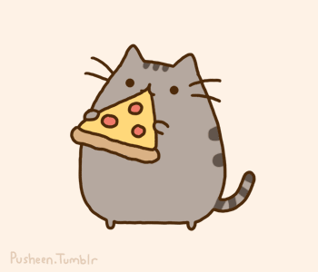

Aoshima (青島, Aoshima), also known as Cat Island (猫の島, Neko no shima), is an island in Ehime Prefecture,Japan, known for its large number of feline residents.The population decreased since Sardine Fisheries depleted and jobs moved to cities; causing human residence on the island to drop.
Routine health care refers to the non-emergency, general care that is needed to keep your cat healthy throughout its life. This includes routine veterinary care for vaccinations, parasite control, and dental care; proper nutrition; grooming; and protection from household hazards.

| Types of cats | Origin | Scientific name |
|---|---|---|
| British Shorthair | Great Britain | Felis catus | <
| persian cat | iran | maine coon | Maine, United States |
| Amirican Shorthair | Europe, North America |
If you want to see cute friendly cat in front of you at restaurent,you can check this out: 